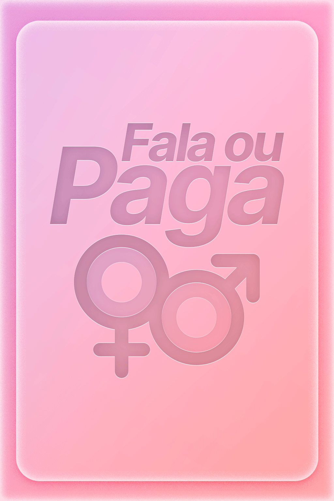

1. Objetivo:
Criar um ambiente divertido e desinibido, em que os participantes se desafiem a responder perguntas ou cumpram punições criativas.:
2. Componentes:
Baralho de cartas vermelhas (contém as perguntas principais)
1 carta prateada por rodada (pergunta livre)
Baralho de cartas douradas (desafios/punições)
3. Preparação:
Embaralhe bem o baralho vermelho.
Insira aleatoriamente, entre as vermelhas, uma carta prateada.
Deixe o baralho dourado separado, virado para baixo.
4. Como Jogar:
O jogador da vez puxa a primeira carta vermelha.
Se for vermelha, lê em voz alta a pergunta e faz ao outro participante.
Se for prateada, o jogador escolhe qualquer pergunta que quiser (pergunta livre).
O outro participante responde ou recusa.
5. Recusa de Resposta:
Se o questionado se recusar a responder, o questionador deve puxar uma carta dourada e cumprir o desafio indicado.
Se quem puxou a carta (a vez) se sentir tímido ou não quiser fazer a pergunta, o outro jogador puxa uma carta dourada e realiza o desafio.
6. Cartas de Desafio (Douradas):
Cada carta dourada traz uma punição criativa.